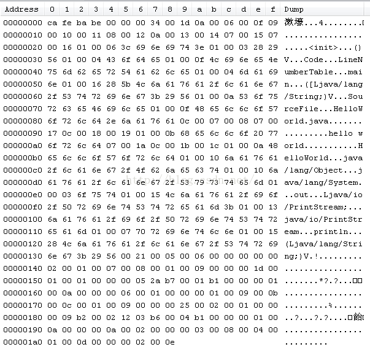

JVM中的常量池和运行时常量池有什么区别¶
常量池分为两种：（静态）常量池和运行时常量池。
常量池 存在于静态的存储文件[可以是任意的二进制流],主要包含着字面量和符号引用
运行时常量池 存在于内存中,也就是常量池被加载到内存之后的版本,它的字面量可以动态的添加——string.intern(),符号引用可以被解析为直接引用
符号引用 符号引用是一组符号来描述所引用的目标,符号可以是任何形式的字面量,只要使用时能无歧义地定位到目标即可。符号引用与虚拟机内部的内存布局无关,引用的目标并不一定加载到内存中。各种虚拟机实现的内存布局可以各不相同,但是他们能接受的符号引用是相同的,因为符号引用的字面量形式明确定义在虚拟机规范的Class文件规范中
public class C {
public void f(){}
}
使用
javap -v C.class
我们看该class文件中的常量池中f()的符号引用——#11
$ javap -v C.class
Classfile /C:/webApp/test6/C.class
Last modified 2018-5-19; size 219 bytes
MD5 checksum d1f04a2ffc36d6d7267f924a1e92307e
Compiled from "C.java"
public class C
minor version: 0
major version: 52
flags: ACC_PUBLIC, ACC_SUPER
Constant pool:
#1 = Methodref #3.#11 // java/lang/Object."<init>":()V
#2 = Class #12 // C
#3 = Class #13 // java/lang/Object
#4 = Utf8 <init>
#5 = Utf8 ()V
#6 = Utf8 Code
#7 = Utf8 LineNumberTable
#8 = Utf8 f
#9 = Utf8 SourceFile
#10 = Utf8 C.java
#11 = NameAndType #4:#5 // "<init>":()V
#12 = Utf8 C
#13 = Utf8 java/lang/Object
{
public C();
descriptor: ()V
flags: ACC_PUBLIC
Code:
stack=1, locals=1, args_size=1
0: aload_0
1: invokespecial #1 // Method java/lang/Object."<init>":()V
4: return
LineNumberTable:
line 1: 0
public void f();
descriptor: ()V
flags: ACC_PUBLIC
Code:
stack=0, locals=1, args_size=1
0: return
LineNumberTable:
line 2: 0
}
SourceFile: "C.java"
这里写图片描述直接引用:直接引用可以是直接指向目标的指针、相对偏移量或是一个能间接定位到目标的句柄。直接引用是和虚拟机内存布局相关的,同一个符号引用在不同虚拟机实例上翻译出来的直接引用一般不会相同。如果有了直接引用,那引用的目标必定已经在内存中存在比如
public class C {
public void f(){}
}
直接引用是我们是看不到的,但是如果我们是用偏移量来表示,它可以是0x00000045[偏移量]
常量池¶
常量池的好处
常量池是为了避免频繁的创建和销毁对象而影响系统性能，其实现了对象的共享。
例如字符串常量池，在编译阶段就把所有的字符串文字放到一个常量池中。
（1）节省内存空间：常量池中所有相同的字符串常量被合并，只占用一个空间。
（2）节省运行时间：比较字符串时，==比equals()快。对于两个引用变量，只用==判断引用是否相等，也就可以判断实际值是否相等。
源文件
public class HelloWorld{
public static void main(String args[]){
System.out.println("hello world");
}
}
Class文件：
我们一个一个的来分析。
1> 魔数
魔数就是这个文件的前四个字节：ca fe ba be(漱壕).它的唯一作用是确定这个屋文件是否可以被JVM接受。很多文件存储标准中都使用魔术来进行身份识别。
2> 版本号
第5和第6个字节是次版本号，第7个和第8 个是主版本号。这里的第7和第8位是0034，即：0x0034。0x0034转为10进制是52。Java的版本是从45开始的然而从1.0 到1.1 是45.0到45.3, 之后就是1.2 对应46， 1.3 对应47 … 1.6 对应50,我这里是1.6.0_24对应的是52，就是0x0034;
3> 常量池的入口
由于常量池中的常量的数量不是固定的，所以常量池的入口需要放置一项u2类型的数据，代表常量池的容量计数值。这里的常量池容量计数值是从1开始的。如图常量池的容量：0x001d(29)。所以共有29个常量。
4> 常量池
常量池中主要存放两类常量：字面量和符号引用。字面量比较接近Java语言层面的常量概念。就是我们什么提到的常量。而符号引用则属于编译原理的方面的概念。包括以下三类常量：
i> 类和接口的全限定名
ii>字段的名称和描述符
iii>方法的名称和描述符
（关于Class文件就先讲到这里，以后有机会再继续）
运行时常量池¶
用于存放编译期生成的字面量和符号应用，这部分内容将在类加载后进入方法区的时候存到运行时常量池中。运行时常量池还有个更重要的的特征：动态性。Java要求，编译期的常量池的内容可以进入运行时常量池，运行时产生的常量也可以放入池中。常用的是String类的intern()方法。
常量池的好处¶
常量池是为了避免频繁的创建和销毁对象而影响系统性能，其实现了对象的共享。 例如字符串常量池，在编译阶段就把所有的字符串文字放到一个常量池中。
（1）节省内存空间：常量池中所有相同的字符串常量被合并，只占用一个空间。
（2）节省运行时间：比较字符串时，==比equals()快。对于两个引用变量，只用==判断引用是否相等，也就可以判断实际值是否相等。
equals和==的区别¶
Java中的数据类型分两种：基本数据类型和引用数据类型。
1> 基本数据类型 byte short int long char float double boolean
对于这些都是用的==来比较两者的值是不是相等。
2> 引用数据类型
一般情况下，equals和==是一样的都是比较的两者的地址值是不是一样。但是有特殊的情况：我们都知道我们使用的类都是继承自Object基类，Object中equals方法中是使用==来实现的，即比较的是两者的地址值。但是Object的子类可以重写equals方法，比如Date、String、Integer等类都是重写了equals都是重写了，比较的是值是否相等。例如String类的源码：
public boolean equals(Object anObject) {
if (this == anObject) {
return true;
}
if (anObject instanceof String) {
String anotherString = (String) anObject;
int n = count;
if (n == anotherString.count) {
char v1[] = value;
char v2[] = anotherString.value;
int i = offset;
int j = anotherString.offset;
while (n-- != 0) {
if (v1[i++] != v2[j++])
return false;
}
return true;
}
}
return false;
}
先比较是不是指向同一个地址，如果不是再比较两者是不是值相等。这个时候equals和==就不一样了。
8种基本数据类型¶
1．对于8种基本数据类型大部分都有自己的封装类，其中Byte,Short,Integer,Long,Character,Boolean都实现了常量池技术。
1>不使用new关键字
Boolean这个就true和false，这个很容易理解。咱们这里可以以Integer为例进行讲解，仔细查看Integer源码你会发现，里面有个静态类IntegerCache。代码如下：
Boolean这个就true和false，这个很容易理解。咱们这里可以以Integer为例进行讲解，仔细查看Integer源码你会发现，里面有个静态类IntegerCache。代码如下：
private static class IntegerCache {
static final int high;
static final Integer cache[];
static {
final int low = -128;
// high value may be configured by property
int h = 127;
if (integerCacheHighPropValue != null) {
// Use Long.decode here to avoid invoking methods that
// require Integer's autoboxing cache to be initialized
int i = Long.decode(integerCacheHighPropValue).intValue();
i = Math.max(i, 127);
// Maximum array size is Integer.MAX_VALUE
h = Math.min(i, Integer.MAX_VALUE - -low);
}
high = h;
cache = new Integer[(high - low) + 1];
int j = low;
for(int k = 0; k < cache.length; k++)
cache[k] = new Integer(j++);
}
private IntegerCache() {}
}
它是对它进行了缓存，范围是[-128,127],只要是这个范围内的数字都会缓存到这个里面，做成常量池进行管理。我们来看一个实例：
public class test {
public static void main(String[] args) {
Integer i1=10;
Integer i2=10;
System.out.println(i1==i2);
}
}
结果：true
第一次把i1的值缓存进去了，当你创建i2的时候，它其实是指向了第一次缓存进去的那个10，所以i1和i2指向了同一个地址。
在这里不得不再提一下基本数据类型和封装类之间的自动装箱和自动拆箱。这里还是以Integer类举例：
public class test {
public static void main(String[] args) {
int i1=10;
Integer i2=10;// 1.自动装箱
System.out.println(i1==i2);//2.自动拆箱
}
}
结果：true
对于自动装箱，我们可以看看源码：
public static Integer valueOf(int i) {
final int offset = 128;
if (i >= -128 && i <= 127) { // must cache
return IntegerCache.cache[i + offset];
}
return new Integer(i);
}
对应于我们写的代码就是Integer i2=10;其实在内部进行实现的时候是Integer i2=Integer.valueOf(10);把int类型的10封装成Integer类型的10。当我们比较i1和i2的时候，Integer类型的10又会自己拆箱成int类型的10进行比较。
2>使用new关键字
如果使用了new关键字就是在堆内存中开辟了一块内存。每次new一个都是在堆中开辟一块内存，我们可以这样理解，就像我们自己吃苹果，每次都是new一个，我要吃个新的，不要旧的。所以每一个的地址都不一样。
例如：
public class test {
public static void main(String[] args) {
Integer i1=new Integer(10);
Integer i2=new Integer(10);
System.out.println(i1==i2);
}
}
结果：false
3.没有实现常量池的Float和Double
public class test {
public static void main(String[] args) {
Float f1=10.0f;
Float f2=10.0f;
System.out.println(f1==f2);
Double d1=12.0;
Double d2=12.0;
System.out.println(d1==d2);
}
}
结果：
false
false
String类
1> 没有使用new关键字
public class test {
public static void main(String[] args) {
String s1="abc1";//此处是数字1
String s2="abc"+1;
System.out.println(s1==s2);// 第一次比较
String s3="ab";
String s4="c";
String s5="abc";
String s6=s3+s4;
System.out.println(s5==s6);// 第二次比较
}
}
结果：
true
false
解释：第一次比较的那里，因为字符串abc和数字1都是字面量，所以加起来还是个字面量，又因为常量池中已经有了s1指向的字面量abc1,所以s2也是指向了字面量abc1。第二次比较那里，这时候的+两面是对象，其实是这样的，对于String s6=s3+s4; 其实运行时是这样的
String s6=new StringBuilder().append(s3).append(s4).toString();
这里的过程是通过StringBuilder这个类实现的，我们来看一下StringBuilder类中的toString()的源码：
public String toString() {
// Create a copy, don't share the array
return new String(value, 0, count);
}
它是通过new String()的方式来作为值进行返回的，所以是在堆中开辟的一块空间。所以和常量池中的不一样。结果是false。
特例1：
public class test {
public static final String s1="abc";
public static final String s2="def";
public static void main(String[] args) {
String s3=s1+s2;
String s4="abcdef";
System.out.println(s3==s4);
}
}
结果：
true
解释：因为s1和s2都是final类型的且在编译阶段都是已经复制了，所以相当于一个常量，当执行Strings3=s1+s2;的时候，s3已经是字符串abcdef了，所以相等。如果没有final修饰，返回false
特例2：
public class test {
public static final String s1;
public static final String s2;
static{
s1="abc";
s2="def";
}
public static void main(String[] args) {
String s3=s1+s2;
String s4="abcdef";
System.out.println(s3==s4);
}
}
结果：
false
解释：虽然s1和s2都是final类型的但是一开始没有初始化，在编译期还不可以知道具体的值，还是变量，所以什么时候赋值，赋什么值都是个变数。所以是false。
2> 使用new关键字
这里就很简单了，使用new关键字当然是每次都是新建一个，分配自己的空间。
public class test {
public static void main(String[] args) {
String s1=new String("abc");
String s2=new String("abc");
System.out.println(s1==s2); //false
}
}
这里还有个重点就是String s1=newString(“abc”);到底创建了几个对象呢？
这里呢，我们分两个阶段来看。
i> 类加载时，对于一个类，类加载只会进行一次。此类进行加载时，会把字符串abc放进全局的常量池中，进行保存。
ii> 运行时，当你运行程序的时候，常量池中存在字符串abc,于是把字面量abc拿进heap中，使它的引用交给s1。
因此这条语句创建了两个对象。(如果之前常量池中存在abc，则只创建一个)
3> 动态添加
我们前面说过，运行时常量池具有动态性特点。我们可以向里面放东西，典型的就是String类的intern()方法。其实intern()方法是这样工作的。如果常量池中存在这个对象直接返回该对象的引用，如果没有我就放进去，再返回该对象的引用。结合new关键字的知识，我们举个例子：
public class test {
public static void main(String[] args) {
String s1=new String("abc");
String s2=s1.intern();
String s3="abc";
System.out.println(s2==s3); //true
}
}
解释：第一次创建s1的时候，创建了两个对象常量池中一个，heap中一个，比较s2和s3时，由于s2是由s1的intern()方法得来的，s2是指向了常量池中的对象，而创建s3时，发现常量池中有这个对象，她就不创建了，直接指向常量池中的那个对象abc了，所以是两者是指向了一个对象。